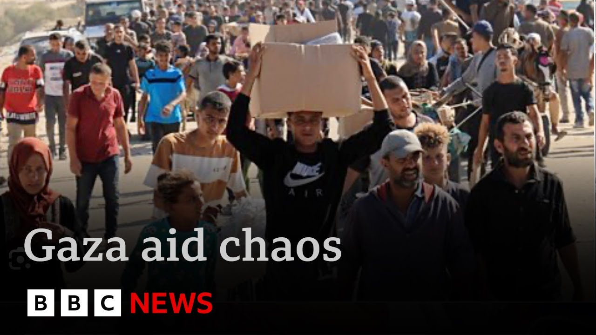

【绝望的巴勒斯坦人冲入加沙有争议的食品分发中心 | BBC新闻】
Summary: Thousands of Palestinians stormed a US-backed Israeli aid hub in southern Gaza, condemned by the UN and local groups, leading to chaos as crowds seized food amid warning shots from Israeli troops. BBC reports from Jerusalem via local freelancers, highlighting hunger overriding fear despite Hamas warnings.
摘要： 数千名巴勒斯坦人冲入美国支持的以色列援助中心，该中心遭联合国和当地组织谴责，人群抢夺食物引发混乱，以军鸣枪警告。BBC通过当地自由记者从耶路撒冷报道，饥饿压倒恐惧，无视哈马斯警告。

⏱️ Estimated Reading Time: 3 min
Thousands of Palestinians in southern Gaza have stormed and overrun an aid distribution hub of a controversial US-backed Israeli scheme that has been condemned by the United Nations and by local humanitarian groups.
加沙南部数千名巴勒斯坦人冲入并占领了一个有争议的美国支持的以色列援助分发中心，该计划遭到联合国和当地人道主义组织的谴责。
Witnesses described a scene of chaos near Rafa as crowds broke down fences and seized food parcels.
目击者描述了拉法附近的混乱场景，人群推倒围栏并抢夺食品包裹。
Warning shots were fired by Israeli soldiers.
以色列士兵鸣枪警告。
Well, Israel doesn't allow international journalists, including the BBC, to report from inside Gaza, but we do rely on trusted local freelancers.
以色列不允许包括BBC在内的国际记者在加沙内部报道，但我们依赖可信的当地自由记者。
Our correspondent, Lucy Williamson, reports from Jerusalem.
我们的记者露西·威廉姆森从耶路撒冷报道。
Hunger has its own rules, and food offers its own kind of security.
饥饿有其自身的规则，而食物提供了一种独特的安全感。
Gaza's new aid distribution hub near Rafa overrun today, hours after opening.
加沙靠近拉法的新援助分发中心在开放几小时后被占领。
Its fences trampled.
围栏被践踏。
Its food parcels seized.
食品包裹被抢夺。
Not even warning shots from Israeli troops nearby interrupt the crowd.
就连附近以色列军队的警告枪声也没能阻止人群。
We want to eat.
我们想吃东西。
We are hungry.
我们很饿。
We've been humiliated with the communal kitchens and the lack of water and everything.
我们因公共厨房和缺水等问题受尽屈辱。
Look what they put here for us.
看看他们给我们准备了什么。
Inside the boxes, rice, pasta, jam, beans, and tuna, carefully unpacked proudly displayed after an 11-week Israeli aid blockade.
箱子里有大米、意大利面、果酱、豆类和金枪鱼，在以色列长达11周的援助封锁后，这些物品被小心拆开并自豪地展示。
These simple parcels of prizes, the new specially built hubs meant to secure Gaza's aid, Israel says, and stop it being stolen by Hamas.
以色列称，这些简单的包裹是新专门建造的中心，旨在保障加沙的援助，并阻止哈马斯窃取。
But the armed American guards securing the site melted away today.
但今天守卫该地的美国武装警卫悄然撤离。
The US-backed foundation behind the plan said its staff fell back to allow Gazans to take the aid safely.
支持该计划的美国基金会表示，其工作人员后撤以让加沙人安全领取援助。
We've got it.
我们拿到了。
We are patient and resilient people.
我们是耐心且坚韧的人民。
People who want to live, hungry people who must be satisfied.
想活下去的人，饥饿的人必须得到满足。
Glory to God.
荣耀归于上帝。
Some in Gaza accuse Israel of using aid distribution to boost military control, and Hamas has warned people to stay away.
加沙一些人指责以色列利用援助分发加强军事控制，哈马斯警告人们远离。
But the scenes here today have proven that hunger weighs heavier than fear.
但今天的场景证明，饥饿比恐惧更沉重。
Lucy Williamson, BBC News, Jerusalem.
露西·威廉姆森，BBC新闻，耶路撒冷。